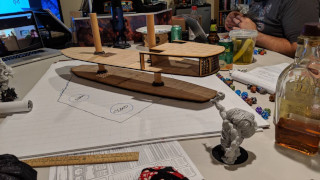

Bravo Theatre Company put on Chess for their 2019 show. The story involves a politically driven,
Cold War era chess tournament between two grandmasters from America and the USSR. I built the
stage and the frames to fly the flags in
the background.
Gallery
D&D Galleon Build

My D&D Group is currently working through the "Storm King's Thunder". The DM wanted a physical
model for the AirShip. I shared my cut files on thingiverse if you're interested in making your
own.
Bravo Theater Company performed "Into the Woods" for its 2018 show. This was one of the largest
sets I have been a part of building to date. The show required a library which became an
enchanted forest. The set had a second story balcony,
a short bridge, and a spiral staircase. The show was amazing and the set looked great.
Gallery
Little Mermaid Boat
One of the local high schools needed a rolling boat for there production of The Little Mermaid.
This project was fun if only for the video of Kristen piloting the boat around the shop.
Gallery
Modular Dungeon Tiles
I was watching too much of the black magic craft channel, which caused me to think I really
needed a set of modular dungeon tiles. I am not currently running a game and probably won't for
a little while. However it turned out to be
a great lesson is painting fake stone. I posted the cut files on thingiverse if you want to cut
your own.
Youth Group is always looking for new games. We saw a metal version of this at our summer retreat
and wanted to bring it home. It was going to be a lot of pvc pipe to cut and then we had the
brilliant idea. Let the kids do it. They
did a great job.
Gallery
Les Miserables: Muskets
Got another prop request from a local high school musical. This time for muskets for Les
Miserables. I was happy with this design and it came in for under $4.00 a musket. Everything
sourced from Home Depot. The stock is cut from 2"x6".
The barrel rest is a 2"x2" with a channel routed down the middle. The barrel is 3/4" schedule 40
electrical conduit. They looked very good stained up.
Gallery
VBS 2021: Vortex Cannon
Built this on for a science demonstration at this years MPC VBS. The cannon(trash can) produces super
stable vortexes of air. So you can knock over light things at a long distance. A fog machine takes it to
the next level so you can see the ring in flight.